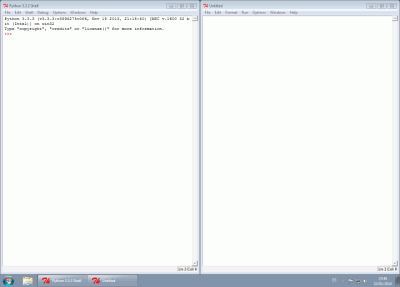

Una guía de estilo de un lenguaje de programación es un conjunto de recomendaciones sobre la forma de dar formato a los programas. El interés de utilizar un estilo específico es facilitar la reutilización de código y la detección de errores. Existen muchos estilos de programación y no se puede decir que uno sea mejor que otro, pero sí que es conveniente adoptar algún estilo determinado y utilizarlo de forma consistente.
El estilo utilizado en estos apuntes y que se recomienda sigan los alumnos se basa en la guía de estilo oficial de Python.
La guía de estilo oficial de Python se encuentra en el PEP 8. Se recogen aquí algunas de las recomendaciones de esta guía:
Sangrar con espacios en vez de tabuladores (IDLE escribe espacios cuando se escribe un tabulador).
Usar 4 espacios en cada nivel de sangrado.
Las líneas no deben contener más de 79 caracteres. Si una línea tiene más de 79 caracteres, se debe dividir en varias líneas.
print("Esta línea es muy larga, tiene más de 79 caracteres, lo que dificulta su legibilidad")
Se aconseja sangrar la línea partida para distinguirla del resto del programa.
Hay varias formas de partir las líneas:
# Aligned with opening delimiter
foo = long_function_name(var_one, var_two,
var_three, var_four)
# More indentation included to distinguish this from the rest.
def long_function_name(
var_one, var_two, var_three,
var_four):
print(var_one)
if (condicion1 and condicion2 and condicion3 and
condicion4):
print("Hola")
if condicion1 and condicion2 and condicion3 and \
condicion4:
print("Hola")
print("Esta línea está cortada en dos líneas de menos de 79 caracteres \
usando una contrabarra")
print("Esta línea está cortada en dos líneas de menos de 79 caracteres",
"partiendo la cadena en dos")
print("Esta línea está cortada en dos líneas de menos de 79 caracteres "
"partiendo la cadena en dos")
Aunque Python permite escribir varias instrucciones por línea separándolas por puntos y comas (;), se recomienda escribir una única instrucción por línea.
print("Hola"); print("Adios")
print("Hola")
print("Adios")
Evitar espacios en las siguientes situaciones:
Justo en el interior de paréntesis, corchetes o llaves:
Sí:spam(ham[1], {eggs: 2})No:spam( ham[ 1 ], { eggs: 2 } )
Justo antes de una coma, punto y coma o dos puntos:
Sí:if x == 4: print x, y; x, y = y, xNo:if x == 4 : print x , y ; x , y = y , x
Justo antes de abrir el paréntesis de una función:
Sí:spam(1)No:spam (1)
Justo antes de los corchetes que indican un índice:
Sí:dict['key'] = list[index]No:dict ['key'] = list [index]
No se debe alinear operadores de distintas líneas usando espacios
Sí:
x = 1
y = 2
long_variable = 3
No:
x = 1
y = 2
long_variable = 3
Otras recomendaciones
Escribir un espacio antes y después de los operadores: asignación (=), asignación aumentada (+=, -= etc.), comparaciones (==, <, >, !=, <>, <=, >=, in, not in, is, is not), booleanos (and, or, not).
Si se utilizan operadores con distintas prioridades, se aconseja utilizar espacios en los operadores de menor prioridad. Nunca escriba más de un espacio y escriba los mismos espacios antes y después de cada operador.
Sí:
i = i + 1
submitted += 1
x = x*2 - 1
hypot2 = x*x + y*y
c = (a+b) * (a-b)
No:
i=i+1
submitted +=1
x = x * 2 - 1
hypot2 = x * x + y * y
c = (a + b) * (a - b)
Normalmente, al trabajar con IDLE se suelen tener abiertas dos ventanas: la ventana de IDLE y la del programa que estés editando. Aunque es una cuestión de gustos, una forma cómoda de trabajar es tener las dos ventanas en mosaico horizontal, con IDLE en la parte izquierda y el programa que se esté editando en la parte derecha.
Para conseguir esta distribución de ventanas:

Los programas de prueba se pueden guardar en la carpeta Mis documentos > Python > pruebas.
Los ejercicios se pueden guardar en la carpeta Mis documentos > Python > ejercicios. Se recomienda crear una subcarpeta para cada grupo de ejercicios (operaciones aritméticas, if elif else, etc.).
Se recomienda que el nombre del programa no contenga espacios sino guiones o subrayados. Por ejemplo, aritmeticas_1.py.
Es importante añadir comentarios a los programas para que sean más comprensibles para los humanos (el ordenador ignora completamente el contenido de los comentarios). En Python un comentario empieza por el carácter almohadilla (#) y acaba al final de la línea. No es necesario comentar todas las líneas, sino sólo aquellas que lo necesiten. Por ejemplo:
ep = 166.386 # Factor de conversión de euros a pesetas
Se puede comentar una línea, aunque el cursor no esté situado al principio de la línea, pulsando la combinación de teclas Alt+3.
Se pueden comentar varias líneas seguidas a la vez, seleccionando con el ratón las líneas a comentar y pulsando la combinación de teclas Alt+3. Cada vez que se pulsa Alt+3, se añaden dos almohadillas a cada línea
Se puede descomentar una línea, aunque el cursor no esté al principio de la línea, pulsando la combinación de teclas Alt+4.
Se pueden descomentar varias líneas seguidas a la vez, seleccionando con el ratón las líneas a comentar y pulsando la combinación de teclas Alt+4. Cada vez que se pulsa Alt+4, se eliminan dos almohadillas de cada línea.
Para poder identificar qué hace cada programa, quién lo ha escrito y cuándo, se aconseja que los programas incluyan una cabecera similar a esta, hecha a base de comentarios:
# Archivo: XXXXXXX_XX.py
# Autor: XXXXX XXXXXXX (nombre y apellidos)
# Fecha: XX de XXXXXX de XXXX
# Descripción: Ejercicio XXXXXXX. Este programa bla bla bla
# Si la descripción es larga, escriba varias líneas